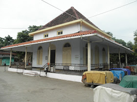

Tentang Wisata Religi
Pekalongan memiliki berbagai destinasi wisata religi yang menarik dan penuh sejarah. Temukan keindahan dan keunikan tempat-tempat ini.
Destinasi Wisata Religi
Masjid Agung Pekalongan

Masjid Agung Al-Jami' Pekalongan adalah sebuah masjid di Pekalongan Jawa Tengah. Lokasi masjid ini berada di alun alun kota Pekalongan. Masjid peninggalan sejarah ini menjadi salah satu ciri khas Kota Pekalongan. Meskipun telah dibangun beberapa Masjid baru yang tak kalah megahnya, namun Masjid Agung Al-Jami' ini tetap tak tergantikan sebagai simbol islami warga Pekalongan.
Makam Habib Ahmad Bin Abdullah Bin Tholib Al Athas
Selain masyarakat Kota Pekalongan dikenal sebagai pengrajin batik,disisi lain juga masyarakat disini sangat religius. Hal ini dikuatkan dengan banyaknya makam-makam para Ulama-ulama atau Wali yang ada disekitar Kota Pekalongan. Termasuk Makam seorang Ulama Besar di Kelurahan Sapuro – Pekalongan. Makam keramat Sapuro Kota Pekalongan yang lokasinya dekat dengan jalur pantura (bisa lewat jalan Jendral Sudirman atau Jalan Jawa) ini laksana magnet bagi masyarakat Kota Batik Pekalongan dan sekitarnya. Komplek pemakaman umum kelurahan Sapuro ini menjadi salah satu tujuan wisata religius di karenakan di komplek pemakaman ini terdapat makam Seorang Habib bernama ” Ahmad Bin Abdullah Bin Tholib Al Athas “, ia adalah seorang tokoh penyebar agama Islam di Kota Pekalongan dan sekitarnya.
Makam Syeh Maulana Mghribi

Makam mulai dipugar tahun 1990-an, di bawah kepemimpinan lurah setempat, Kasmudi. Pemugaran dan perawatan dilakukan terus menerus hingga saat ini. Apalagi dengan adanya proyek PLTU 2x1.000 mega watt. Makam tersebut semakin terawat. Uniknya, di depan bangunan makam tersebut ada sumber mata air. Air terus mengalir, dan ditampung ke dalam kendi. Ada dua kendi yang menampung air yang keluar. Air muncul dari bawah kendi yang sengaja dilubangi. Lokasinya berada di dekat pohon besar yang telah ditebang. "Itu biasanya untuk minum, wudhu, cuci muka, dan lain sebagainya. Bahkan ada yang percaya air tersebut bisa mengobati," ucapnya. Ia menambahkan, makam tersebut juga berkaitan dengan dataran tinggi Dieng. Tepat di bawah tebing makam ada gua. Namanya gua Aswatama atau Aswatomo dalam ejaan Bahasa Jawa.